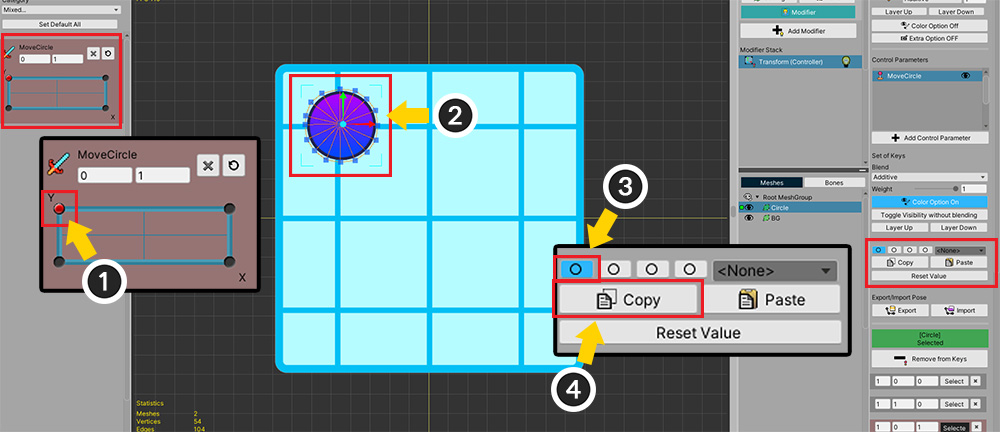
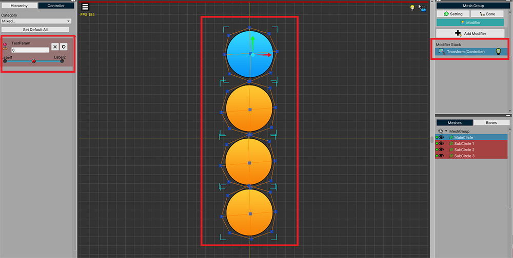
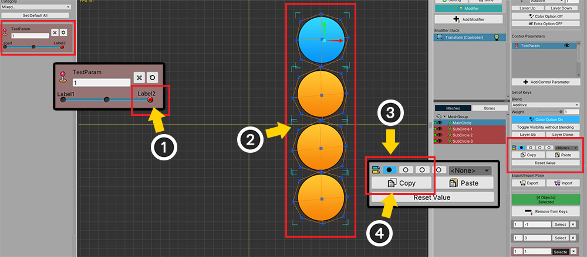
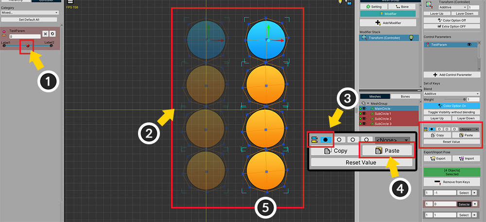

AnyPortrait > Manual > Copy/paste using slots
Copy/paste using slots
1.3.0
When using modifiers that use control parameters, it may be necessary to create the result of combining the values of two or more keys.
For example, if you combine the face toward left and the face toward up to create the face toward up-left.
This page covers how to use Slots to copy two or more key values.
Note
This function is only supported for modifiers using control parameters.

A simple example using the Transform (Controller) modifier is configured as above.
(1) The mesh is located in Down-Left.
(2) The position of the mesh is controlled by a control parameter with the "Vector2" type.
The control parameter is also based on the Down-Left.

The mesh is positioned in Up-Left and Down-Right to match the control parameters.
In other words, the mesh moves Up (+Y) or Right (+X) depending on the control parameter.

(1) Let's combine the position values of the Up-Left (+Y) and Down-Right (+X) meshes so that (2) the mesh is positioned at Up-Right (+XY).

Before copy/paste, add a new key.
(1) Place the control parameter slider on the Up-Right.
(2) Create a key.

Let's copy and paste the two key values (+Y and +X).
(1) First, move the control parameter to Up-Left (+Y).
(2) With this key, the mesh moves up (+Y) from the base position.
(3) Select the first slot.
(4) Click the Copy button to save the position of the mesh to the corresponding slot.

When saving to the slot, the button changes from Empty Circle to Filled Circle as above.

Let's copy the second value in the same way.
(1) Move the control parameter to Down-Right (+X).
(2) Select the second slot.
(3) Click the Copy button to save the value to the slot.

Then, let's paste the two saved values together.
(1) Select the newly created key.
(2) Select the first slot ( Click ).
(3) Select the second slot in addition( Ctrl+Click ).
(In Mac, you can select by Command+Click .)
(4) Two slots are selected.
- Blue slot: When Click , the selection of other slots is released, and only the clicked slot is selected. Pressing the Copy button saves the value to this slot.
- Purple slot: When Ctrl+Click , the corresponding slot is additionally selected, and the color of the button becomes purple.
- You can select up to 4 slots.

(5) You can choose how to combine the values. First, let's choose the Sum method.

(6) Press the Paste button.
(7) The two values are combined and you can see the mesh moved to Up-Right.
In other words, it is the result of "+X" and "+Y" being combined and moving the mesh to the location of "+XY"

(1) In this step, select the Average method and (2) Press the Paste button.
(3) You can see the mesh is located in the center.
Moved to the average position of "+X" and "+Y".
Copying values of multiple objects
1.3.2
In AnyPortrait v1.3.2, after selecting multiple objects, you can save and copy the modifier value corresponding to each in the slot at once.
However, since this function operates independently of Selecting one object, it is recommended that you read the description below.

We have prepared an example like the one above for explanation.
There are One Blue mesh and Three Orange meshes.
The Transform (Controller) modifier is registered, and three keys are created in the control parameter.

In two of the three keys of the control parameter registered in the modifier, the meshes move left and right, respectively.

The function of storing and copying values in the slot operates independently when targeting a single object and when targeting multiple objects.
First, let's store a value for a single object.
(1) Change the value of the control parameter so that the meshes move to Left.
(2) Select only the Blue mesh.
(3) Select the first slot.
(4) Press the Copy button to store the Mesh moving state to the slot.

Next, let's store the value for multiple objects in reverse.
(1) Change the value of the control parameter so that the meshes move to Right.
(2) This time, select All meshes including the Blue mesh.
(3) Select the first slot.
(4) Click the Copy button to store the the state of Meshes moving to the right.

Now let's apply the stored values and see the difference.
(1) Change the value of the control parameter to apply the copied value.
(2) Select all meshes.
(3) With the first slot selected, (4) press the Paste button.
(5) You can see the meshes move to Right.
This is because if you press the Paste button while multiple meshes are selected, the stored value when multiple meshes are selected are applied.

(1) Conversely, let's select only the Blue mesh.
(2) In the same way, select the first slot and (3) press the Paste button.
(4) You can see the blue mesh moving to Left.
When a single object is selected, the value stored when one mesh is selected is applied.
To summarize the above:
- The values are saved in two cases: In case of selecting a single object and In case of selecting multiple objects.
- The value stored in the case of selecting a single object can be applied to other objects as well.
- In the case of selecting multiple objects, the stored values are applied only to each object.
- It is possible to merge and apply the values of slots even in the case of selecting multiple objects.